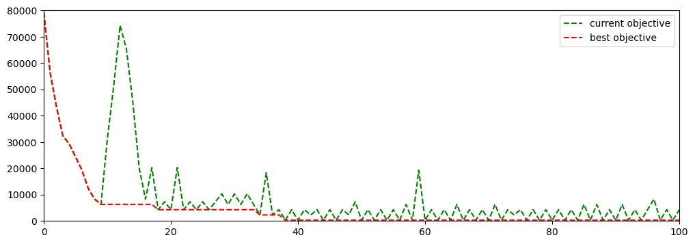

import numpy as np
import pandas as pd
import matplotlib.pyplot as plt
df = pd.read_csv("/Users/klian/dev/books/metaheuristics-java/data/gap/perf_records.csv", names=['iteration', 'curr_obj', 'best_obj'])8 Tabu Search for GAP
8.1 Algorithm Design
8.1.1 Solution representation
8.1.2 Neighborhood structure
8.1.3 Tabu table design
8.2 Implementation in Java
In this section, we present an implementation of Tabu Search in Java.
8.2.1 Source file structure
src/main/java
└── com
└── voyager
└── opt
└── metaheuristics
├── gap
│ ├── GapInstance.java
│ ├── GapInstanceReader.java
│ ├── GapSolution.java
│ └── tabu
│ ├── GapSolutionNeighbor.java
│ └── GapTabuSearch.java
└── utils
├── PerfRecord.java
└── PerfRecordsWriter.java8.2.2 Java classes and explanations
GapInstance.java
package com.voyager.opt.metaheuristics.gap;
import lombok.AllArgsConstructor;
import lombok.Builder;
import lombok.Data;
@Data
@Builder
@AllArgsConstructor
public class GapInstance {
/**
* total number of tasks
*/
private int numTasks;
/**
* total number of agents
*/
private int numAgents;
/**
* costs of assigning tasks to agents
*/
private int[][] costs;
/**
* resource consumption of assigning tasks to agents
*/
private int[][] resources;
/**
* agent capacities
*/
private int[] capacities;
}GapSolution.java
package com.voyager.opt.metaheuristics.gap;
import lombok.Getter;
import java.util.Arrays;
import java.util.Random;
import java.util.stream.IntStream;
@Getter
public final class GapSolution {
/**
* reference to the instance to be solved
*/
private final GapInstance instance;
/**
* dimension: 1 * numTasks
* assigned agent index for each task
*/
private final int[] agentAssignments;
/**
* dimension: 1 * numAgents
* consumed capacity of each agent
*/
private final int[] consumedCapacities;
/**
* total objective value
*/
private int objective;
/**
* assignment cost, without penalties
*/
private int assignmentCost;
/**
* capacity violation penalties of all agents
*/
private int capacityViolationPenalty;
public GapSolution(GapInstance instance) {
this.instance = instance;
this.agentAssignments = new int[this.instance.getNumTasks()];
this.consumedCapacities = new int[this.instance.getNumAgents()];
Arrays.fill(this.agentAssignments, 0);
Arrays.fill(consumedCapacities, 0);
this.objective = 0;
this.assignmentCost = 0;
this.capacityViolationPenalty = 0;
}
/**
* copy constructor
* @param other the other solution to copy from
*/
public GapSolution(GapSolution other) {
this.instance = other.instance;
this.agentAssignments = new int[this.instance.getNumTasks()];
System.arraycopy(other.agentAssignments, 0,
this.agentAssignments, 0,
this.instance.getNumTasks());
this.consumedCapacities = new int[this.instance.getNumAgents()];
System.arraycopy(other.consumedCapacities, 0,
this.consumedCapacities, 0,
this.instance.getNumAgents());
this.objective = other.objective;
this.assignmentCost = other.assignmentCost;
this.capacityViolationPenalty = other.capacityViolationPenalty;
}
/**
* randomly assign tasks to agents
* @param random random number generator
*/
public void initialize(Random random) {
int[][] resources = this.instance.getResources();
for (int i = 0; i < instance.getNumTasks(); i++) {
int agentIdx = random.nextInt(instance.getNumAgents());
this.agentAssignments[i] = agentIdx;
this.consumedCapacities[agentIdx] += resources[agentIdx][i];
}
}
/**
* compute objective values
* @param capacityViolationPenalty penalty factor
*/
public void computeObjective(int capacityViolationPenalty) {
// compute assignment costs
this.assignmentCost = IntStream.range(0, instance.getNumTasks())
.map(taskIdx -> instance.getCosts()[agentAssignments[taskIdx]][taskIdx])
.sum();
// compute capacity violation costs
this.capacityViolationPenalty = IntStream.range(0, instance.getNumAgents())
.map(agentIdx -> capacityViolationPenalty *
Math.max(0, this.consumedCapacities[agentIdx] - instance.getCapacities()[agentIdx]))
.sum();
this.objective = this.assignmentCost + this.capacityViolationPenalty;
}
public int getAssignedAgent(int taskIdx) {
return this.agentAssignments[taskIdx];
}
/**
* assign agent to task
* @param taskIdx the task to be assigned
* @param agentIdx the agent index
*/
public void setAssignedAgent(int taskIdx, int agentIdx) {
int currAgentIdx = this.agentAssignments[taskIdx];
this.agentAssignments[taskIdx] = agentIdx;
this.consumedCapacities[currAgentIdx] -= instance.getResources()[currAgentIdx][taskIdx];
this.consumedCapacities[agentIdx] += instance.getResources()[agentIdx][taskIdx];
}
}GapSolutionNeighbor.java
package com.voyager.opt.metaheuristics.gap.tabu;
import com.voyager.opt.metaheuristics.gap.GapSolution;
import lombok.Builder;
import lombok.Getter;
@Getter
@Builder
public class GapSolutionNeighbor {
/**
* neighboring solution
*/
private GapSolution newSolution;
/**
* the task for which agent assignment is changed
*/
private int mutatedTaskIdx;
/**
* new agent index for the chosen task
*/
private int newAgentIdx;
}GapTabuSearch
package com.voyager.opt.metaheuristics.gap.tabu;
import com.voyager.opt.metaheuristics.gap.GapInstance;
import com.voyager.opt.metaheuristics.gap.GapInstanceReader;
import com.voyager.opt.metaheuristics.gap.GapSolution;
import com.voyager.opt.metaheuristics.utils.PerfRecord;
import com.voyager.opt.metaheuristics.utils.PerfRecordsWriter;
import lombok.Getter;
import lombok.Setter;
import java.util.*;
@Getter
@Setter
public final class GapTabuSearch {
/**
* instance to be solved
*/
private final GapInstance instance;
/**
* random number generator
*/
private final Random random;
/**
* tabu table
*/
private final int[][] tabuTable;
/**
* best solution
*/
private GapSolution bestSolution;
private List<PerfRecord<Integer>> perfRecords;
public GapTabuSearch(GapInstance instance) {
this.instance = instance;
this.random = new Random(42);
int numTasks = instance.getNumTasks();
this.tabuTable = new int[numTasks][instance.getNumAgents()];
for (int i = 0; i < numTasks; i++) {
Arrays.fill(this.tabuTable[i], 0);
}
this.bestSolution = null;
this.perfRecords = new ArrayList<>();
}
public void solve() {
// penalty factor for capacity violation
int capacityViolationPenalty = 1000;
// tabu search parameters
int neighSize = 100;
int tabuLength = 100;
// stopping criteria
int maxIter = 2000;
int maxIterNoImprove = 500;
// create a starting solution
GapSolution currSolution = new GapSolution(this.instance);
currSolution.initialize(this.random);
currSolution.computeObjective(capacityViolationPenalty);
this.bestSolution = currSolution;
this.perfRecords.add(new PerfRecord<>(0,
currSolution.getObjective(),
bestSolution.getObjective()));
int numTasks = this.instance.getNumTasks();
int numAgents = this.instance.getNumAgents();
// main workflow
int iter = 0;
int iterNoImprove = 0;
while (true) {
System.out.println("iter: " + iter + ", best obj: " + bestSolution.getObjective());
// create neighboring solutions
List<GapSolutionNeighbor> neighbors = new ArrayList<>(neighSize);
for (int i = 0; i < neighSize; i++) {
// create a copy of current solution
GapSolution newSolution = new GapSolution(currSolution);
// mutate one task assignment
int randTaskIdx = this.random.nextInt(numTasks);
int currAgentIdx = newSolution.getAssignedAgent(randTaskIdx);
int newAgentIdx = this.random.nextInt(numAgents);
while (newAgentIdx == currAgentIdx) {
newAgentIdx = this.random.nextInt(numAgents);
}
newSolution.setAssignedAgent(randTaskIdx, newAgentIdx);
// compute objective value after mutation
newSolution.computeObjective(capacityViolationPenalty);
GapSolutionNeighbor neighbor = GapSolutionNeighbor.builder()
.newSolution(newSolution)
.mutatedTaskIdx(randTaskIdx)
.newAgentIdx(newAgentIdx)
.build();
neighbors.add(neighbor);
}
// sort neighboring solutions
neighbors.sort(Comparator.comparingInt(neighbor -> neighbor.getNewSolution().getObjective()));
boolean currSolutionUpdated = false;
boolean bestSolutionUpdated = false;
// check tabu criteria
for (GapSolutionNeighbor neighbor : neighbors) {
GapSolution newSolution = neighbor.getNewSolution();
int mutatedTaskIdx = neighbor.getMutatedTaskIdx();
int newAgentIdx = neighbor.getNewAgentIdx();
if (this.tabuTable[mutatedTaskIdx][newAgentIdx] < iter) {
// this move is not tabooed, proceed
currSolution = newSolution;
currSolutionUpdated = true;
this.tabuTable[mutatedTaskIdx][newAgentIdx] = iter + tabuLength;
if (currSolution.getObjective() < this.bestSolution.getObjective()) {
this.bestSolution = currSolution;
bestSolutionUpdated = true;
break;
}
} else {
// check aspiration criterion
if (newSolution.getObjective() < bestSolution.getObjective()) {
currSolution = newSolution;
bestSolution = currSolution;
currSolutionUpdated = true;
bestSolutionUpdated = true;
this.tabuTable[mutatedTaskIdx][newAgentIdx] = iter + tabuLength;
break;
}
}
}
// in case no move is possible, choose the best neighbor
if (!currSolutionUpdated) {
GapSolutionNeighbor neighbor = neighbors.getFirst();
currSolution = neighbor.getNewSolution();
this.tabuTable[neighbor.getMutatedTaskIdx()][neighbor.getNewAgentIdx()] = iter + tabuLength;
}
iter++;
this.perfRecords.add(new PerfRecord<>(iter,
currSolution.getObjective(),
bestSolution.getObjective()));
// check stopping criteria
iterNoImprove = bestSolutionUpdated ? 0 : iterNoImprove + 1;
if (iter >= maxIter || iterNoImprove >= maxIterNoImprove) {
break;
}
}
}
public void savePerfRecords(String filename) {
PerfRecordsWriter.write(filename, perfRecords);
}
public static void main(String[] args) {
String filename = "/Users/klian/dev/metaheuristics-java-code/src/main/resources/data/gap/gap1.txt";
String outputFilename = "/Users/klian/dev/books/metaheuristics-java/data/gap/perf_records.txt";
List<GapInstance> instances = GapInstanceReader.read(filename);
GapInstance instance = instances.get(1);
GapTabuSearch tabuSearch = new GapTabuSearch(instance);
tabuSearch.solve();
tabuSearch.savePerfRecords(outputFilename);
}
}8.2.3 Performance on benchmarking instances
df| iteration | curr_obj | best_obj | |
|---|---|---|---|
| 0 | 0 | 79294 | 79294 |
| 1 | 1 | 56291 | 56291 |
| 2 | 2 | 43294 | 43294 |
| 3 | 3 | 32300 | 32300 |
| 4 | 4 | 29306 | 29306 |
| ... | ... | ... | ... |
| 554 | 554 | 7294 | 273 |
| 555 | 555 | 1291 | 273 |
| 556 | 556 | 3297 | 273 |
| 557 | 557 | 1291 | 273 |
| 558 | 558 | 6288 | 273 |
559 rows × 3 columns
fig, ax = plt.subplots(1, 1, figsize=(12, 4))
ax.plot(df['iteration'], df['curr_obj'], 'g--', label="current objective")
ax.plot(df['iteration'], df['best_obj'], 'r--', label="best objective")
ax.legend()
ax.set_xlim([0, 100])
ax.set_ylim([0, 80000])